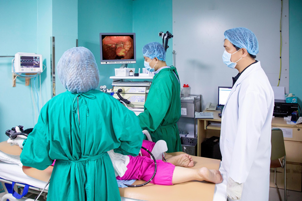
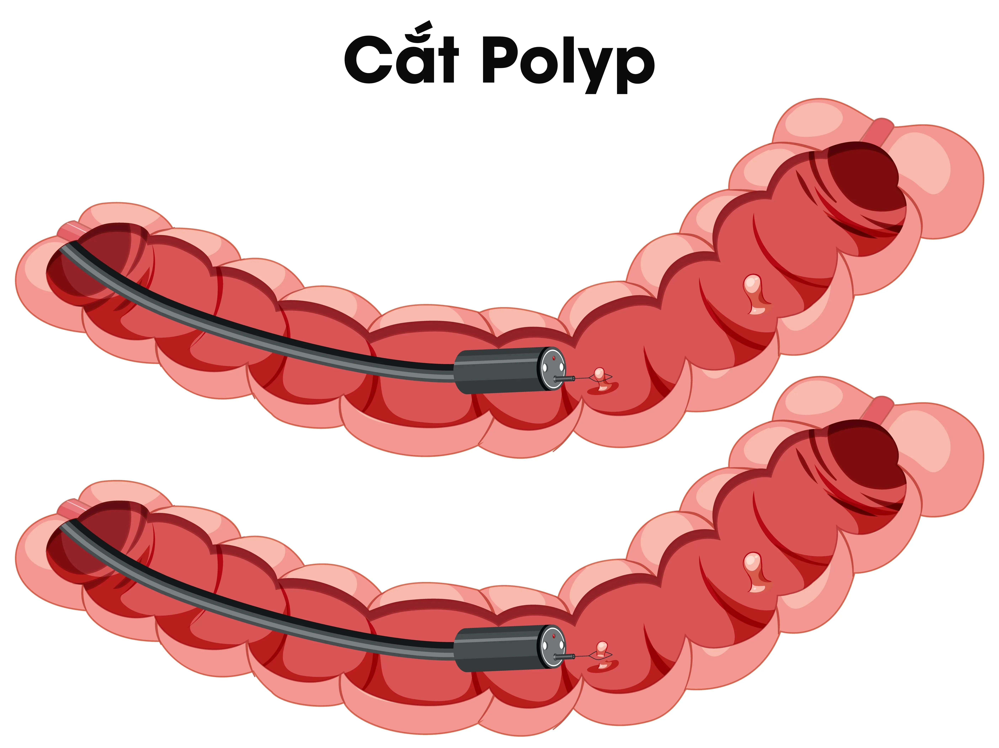

Polyp đại tràng: Tín hiệu cảnh báo ung thư ruột bạn cần biết
Polyp đại tràng là gì?
Polyp đại tràng là những tổn thương hình thành từ lớp niêm mạc đại tràng và nhô ra vào trong lòng đại tràng. Polyp có thể có cuống hoặc không cuống và có thể xuất hiện ở bất kỳ vị trí nào trong đại tràng và trực tràng.
Đặc điểm quan trọng của polyp đại tràng:
- Một số loại polyp đại tràng có thể tiến triển thành ung thư theo thời gian nếu không được phát hiện và can thiệp kịp thời.
- Cắt bỏ các polyp tân sinh ở đại tràng qua nội soi giúp ngăn ngừa ung thư đại tràng.
- Polyp thường phát triển âm thầm, ít triệu chứng ở giai đoạn đầu.
- Có thể xuất hiện ở mọi lứa tuổi nhưng phổ biến hơn ở người trên 40 tuổi.
Tại sao polyp đại tràng được coi là “tín hiệu cảnh báo” ung thư?
Mối liên hệ giữa polyp và ung thư đại tràng
Ung thư đại tràng đứng thứ 3 về tỷ lệ mắc và thứ 2 về tỷ lệ tử vong trên thế giới. Polyp đại tràng được xếp vào nhóm tổn thương tiền ung thư, có nghĩa là chúng có khả năng tiến triển thành ung thư nếu không được điều trị kịp thời.
Các loại polyp đại tràng
1. Polyp không tân sinh
Polyp tăng sản (Hyperplastic polyp)
- Thường nhỏ, lành tính
- Hiếm khi chuyển thành ung thư
- Thường gặp nhất ở trực tràng và đại tràng chậu hông
Polyp viêm (Inflammatory polyp)
- Hình thành do tình trạng viêm mạn tính
- Ít có khả năng ung thư hóa
- Thường gặp ở bệnh nhân viêm loét đại tràng
2. Polyp tân sinh
Polyp tuyến (Adenomatous polyp)
- Có nguy cơ tiến triển thành ung thư
- Chiếm khoảng 70% tổng số polyp đại tràng
- Cần được phát hiện sớm và cắt bỏ
Polyp răng cưa (Serrated polyp)
- Có nguy cơ tiến triển thành ung thư
- Chiếm khoảng 20-30% tổng số polyp đại tràng
- Cần được phát hiện sớm và cắt bỏ
Dấu hiệu và triệu chứng cảnh báo
Triệu chứng thường gặp
1. Đi tiêu ra máu
- Máu tươi hoặc máu đen lẫn trong phân
- Có thể xuất hiện dưới dạng vệt đỏ dính trên giấy vệ sinh hoặc bề mặt phân
2. Thay đổi thói quen đi tiểu
- Táo bón hoặc tiêu chảy kéo dài hơn 1 tuần
- Thay đổi hình dạng, kích thước phân
- Cảm giác chưa hết phân sau khi đi tiêu
3. Đau bụng
- Đau âm ỉ hoặc quặn bụng
- Có thể kèm buồn nôn, nôn
- Dấu hiệu tắc ruột hoặc bán tắc ruột
4. Các triệu chứng khác
- Thiếu máu do chảy máu mạn tính
- Mệt mỏi, suy nhược, chán ăn
- Sụt cân không rõ nguyên nhân
Khi nào cần gặp bác sĩ ngay?
- Đi tiểu ra máu bất thường
- Thay đổi thói quen đi tiểu kéo dài
- Đau bụng liên tục không thuyên giảm
- Mệt mỏi, thiếu máu không rõ nguyên nhân
Nguyên nhân và yếu tố nguy cơ
Yếu tố không thể thay đổi
1. Tuổi và giới tính
- Nguy cơ tăng cao ở người trên 40 tuổi
- Nam giới có tỷ lệ mắc cao hơn nữ giới
2. Yếu tố di truyền
- Tiền sử gia đình có polyp hoặc ung thư đại tràng
- Một số hội chứng di truyền hiếm gặp
3. Tiền sử bệnh lý
- Đã từng có polyp đại tràng trước đó
- Bệnh viêm ruột mạn tính
- Ung thư buồng trứng hoặc tử cung trước tuổi 50
Yếu tố có thể thay đổi
1. Chế độ ăn uống
- Ăn nhiều thịt đỏ, thịt chế biến
- Thiếu chất xơ trong khẩu phần ăn
- Ít rau xanh, trái cây tươi
2. Lối sống
- Hút thuốc lá
- Uống rượu bia thường xuyên
- Ít vận động, thừa cân hoặc béo phì
Phương pháp chẩn đoán
1. Nội soi đại tràng
“Tiêu chuẩn vàng” trong chẩn đoán polyp
- Quan sát trực tiếp toàn bộ niêm mạc đại tràng
- Có thể cắt bỏ polyp ngay trong quá trình nội soi
- Độ chính xác gần như tuyệt đối

2. Nội soi đại tràng ảo (CT Colonography)
- Sử dụng máy chụp CT để tạo hình ảnh 3D của đại tràng
- Ít xâm lấn hơn nội soi truyền thống
- Khả năng phát hiện polyp nhỏ và polyp phẳng thấp hơn
- Không thể cắt polyp hoặc sinh thiết tổn thương, nên vẫn cần nội soi đại tràng nếu phát hiện có tổn thương.
3. Xét nghiệm máu ẩn trong phân
- Phát hiện máu vi thể trong phân mà mắt thường không nhìn thấy
- Là phương pháp sàng lọc ban đầu
- Nếu kết quả dương tính, cần nội soi đại tràng để xác định nguyên nhân
Phương pháp điều trị
1. Cắt polyp qua nội soi
Cắt polyp bằng kềm sinh thiết:
- Sử dụng kềm sinh thiết
- Thích hợp với polyp có kính thước dưới 5 mm
- Thời gian thực hiện nhanh
Cắt lạnh polyp qua nội soi
- Dùng dây thòng lọng chuyên dụng (cold snare) để kẹp và cắt polyp bằng lực cơ học
- Thích hợp với polyp không có cuống kích thước < 10 mm
- Thời gian thực hiện nhanh
Cắt polyp bằng thòng lọng điện
- Dùng dây thòng lọng và điện đốt cao tần để cắt polyp
- Phù hợp với polyp có cuống hoặc polyp không cuống kích thước dưới 20 mm
Kỹ thuật cắt dưới niêm mạc qua nội soi (EMR):
- Tiêm dung dịch vào lớp dưới niêm mạc để nâng polyp trước khi cắt
- Phù hợp với polyp không cuống kích thước lớn hơn 20 mm

2. Phẫu thuật
- Đối với polyp quá lớn không thể cắt qua nội soi đại tràng
- Polyp nghi ngờ ung thư xâm lấn
- Polyp đã cắt nhưng có bằng chứng mô học ác tính xâm lấn sâu vào lớp dưới niêm
- Polyp số lượng nhiều, nghi hội chứng di truyền
Theo dõi sau điều trị
Lịch tái khám và nội soi đại tràng kiểm tra
Polyp tuyến có nguy cơ cao:
- Polyp có kích thước ≥ 10mm, loạn sản độ cao hoặc có thành phần tuyến nhánh
- Nội soi kiểm tra lại sau 3 năm
Polyp tuyến không có nguy cơ cao:
- Nội soi kiểm tra lại sau 5-10 năm
- Số lượng polyp > 10: nội soi kiểm tra lại sau 1 năm
- Số lượng polyp từ 5-10: nội soi kiểm tra lại sau 3 năm
Polyp tuyến răng cưa:
- Polyp có kích thước ≥ 10mm hoặc loạn sản: nội soi kiểm tra lại 3 năm
- U tuyến răng cưa truyền thống: nội soi kiểm tra lại sau 3 năm
Lưu ý: Việc chỉ định thời điểm nội soi đại tràng kiểm tra còn tùy thuộc từng trường hợp cụ thể. Bác sĩ sẽ đưa ra kế hoạch theo dõi chi tiết cho từng bệnh nhân ở mỗi lần thăm khám.
Xem thêm: NỘI SOI ĐẠI TRÀNG - Chuẩn bị đầy đủ để tránh hoãn lịch
Phòng ngừa polyp đại tràng
1. Chế độ ăn uống lành mạnh
Nên ăn:
- Nhiều rau xanh, trái cây tươi
- Ngũ cốc nguyên hạt, thực phẩm giàu chất xơ
- Cá biển, thực phẩm giàu Omega-3
- Sữa chua, thực phẩm chứa men vi sinh
Nên hạn chế:
- Thịt đỏ, thịt chế biến sẵn
- Thực phẩm chiên rán, nhiều dầu mỡ
- Đồ ngọt, bánh kẹo, nước ngọt có gas
- Rượu bia, thuốc lá
2. Lối sống tích cực
- Tập thể dục thường xuyên: ít nhất 150 phút/tuần
- Duy trì cân nặng hợp lý: BMI trong khoảng 18.5 - 24.9
- Không hút thuốc
- Hạn chế rượu bia
3. Tầm soát định kỳ
Người nguy cơ trung bình:
- Bắt đầu tầm soát từ 45 tuổi
- Nội soi đại tràng mỗi 10 năm
- Xét nghiệm máu ẩn phân hàng năm
Người nguy cơ cao:
- Bắt đầu sớm hơn (40 tuổi hoặc sớm hơn)
- Theo dõi chặt chẽ với bác sĩ chuyên khoa
Tầm quan trọng của việc phát hiện sớm
Lợi ích của việc tầm soát
- Ngăn ngừa ung thư: Cắt bỏ polyp trước khi tiến triển thành ác tính
- Phát hiện ung thư ở giai đoạn sớm: Tỷ lệ khỏi bệnh cao
- Giảm chi phí điều trị: Chi phí tầm soát thấp hơn nhiều so với điều trị ung thư
- Cải thiện chất lượng cuộc sống: Giảm lo lắng, yên tâm về sức khỏe
Thông điệp quan trọng
“Tầm soát polyp đại trực tràng thường xuyên là biện pháp phòng ngừa ung thư đại trực tràng hiệu quả nhất”
Việc phát hiện và loại bỏ polyp đại tràng kịp thời có thể:
- Ngăn ngừa đến 90% trường hợp ung thư đại tràng
- Cứu sống hàng nghìn người mỗi năm
- Giảm gánh nặng bệnh tật cho gia đình và xã hội
Kết luận
Polyp đại trực tràng thực sự là tín hiệu cảnh báo quan trọng về nguy cơ ung thư đại trực tràng. Việc phát hiện sớm và điều trị kịp thời là chìa khóa để ngăn ngừa sự tiến triển thành ung thư đại tràng - một trong những ung thư đường tiêu hóa nguy hiểm.
Thông điệp chính:
- Không bỏ qua các triệu chứng bất thường của đường tiêu hóa
- Thực hiện tầm soát định kỳ theo khuyến cáo y tế
- Duy trì lối sống và chế độ ăn uống lành mạnh
- Tuân thủ lịch theo dõi sau điều trị để ngăn ngừa tái phát.
Với sự phát triển của y học hiện đại, việc chẩn đoán và điều trị polyp đại tràng đã trở nên an toàn và hiệu quả. Bác sĩ chuyên khoa tại phòng khám sẽ tư vấn chi tiết về phương pháp tầm soát phù hợp với từng bệnh nhân, đảm bảo phát hiện sớm và điều trị kịp thời mọi bất thường.
Hãy chủ động bảo vệ sức khỏe của mình và gia đình bằng cách thực hiện tầm soát polyp đại tràng định kỳ. Đây là khoản đầu tư xứng đáng nhất cho sức khỏe dài lâu.

Các tin khác


ĐĂNG KÝ NHẬN BẢN TIN

Phòng Khám Đa Khoa Đại Phước
- 829 đường 3 tháng 2, Phường Minh Phụng, Thành phố Hồ Chí Minh
- 1900 599 941 - 0938 829 831
- (028) 3955 7999
- info@ytedaiphuoc.vn
-

6:00 - 11:30 (Chủ Nhật)


GPKD số : 0312023683 cấp ngày: 29/10/2012 Bởi Sở Kế Hoạch và Đầu Tư TP.Hồ Chí Minh
Đại diện: Tống Nguyễn Diễm Hồng